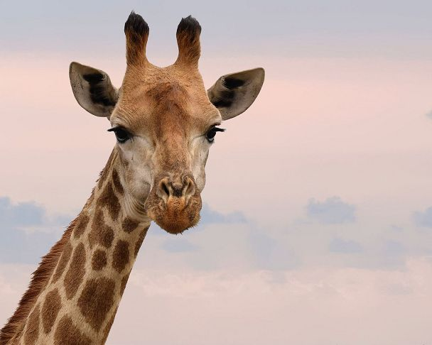

Giraffa

Nome comune: Giraffa
Nome scientifico: Giraffa camelopardalis
Ordine: Artiodactyla
Famiglia: Giraffidae
Habitat: L'habitat frammentato della giraffa si estende dal Ciad al nord al Sudafrica a sud, e dal Niger a ovest alla Somalia a est. Le giraffe generalmente vivono in savane, distese erbose e aree boschive aperte.
Riproduzione: La gestazione della giraffa dura 400-460 giorni, dopo i quali nasce normalmente un unico piccolo, anche se non sono del tutto sconosciuti i parti gemellari.
Curiosità: Per tutto l'anno, i maschi si affrontano in combattimenti a volte violenti. Siccome utilizzano prevalentemente il collo, gli anglosassoni hanno chiamato questi scontri "collaggio". La lotta viene talvolta scatenata da un maschio provocatore che si avvicina a un altro maschio e gli si pone di fronte, spavaldamente eretto sulle zampe rigide. Se l'altro adotta lo stesso atteggiamento, la lotta è ingaggiata.